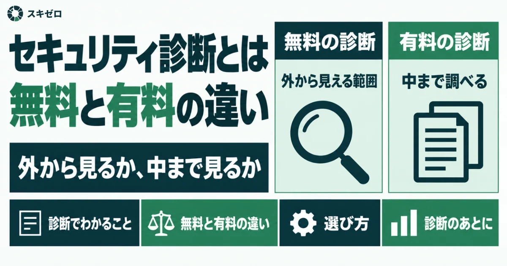
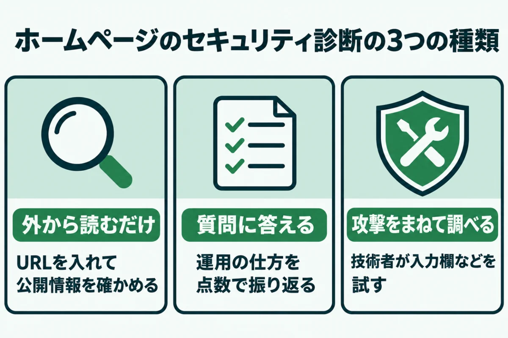
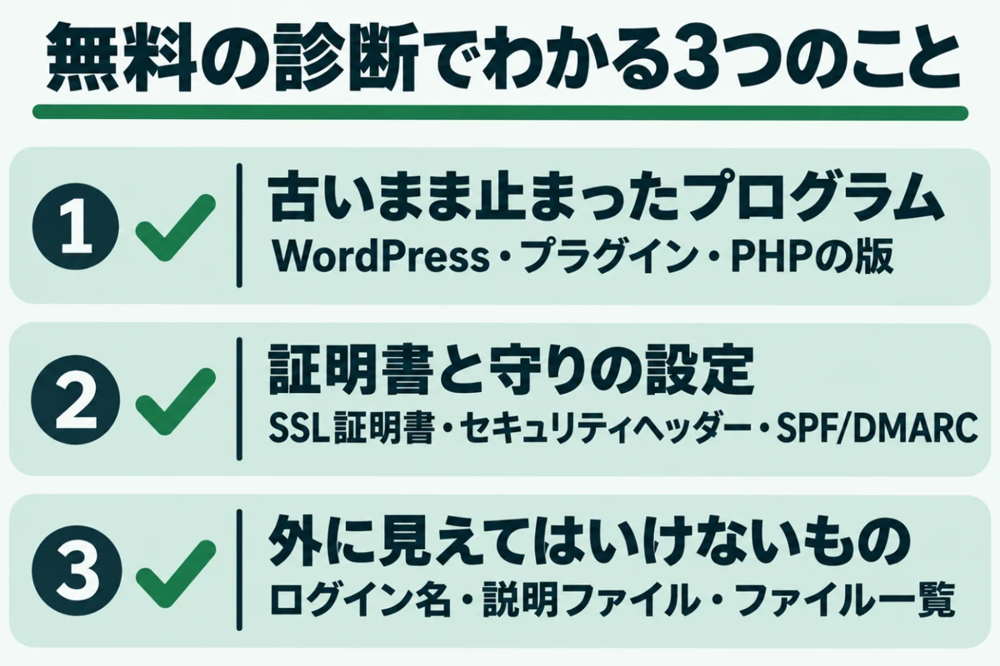
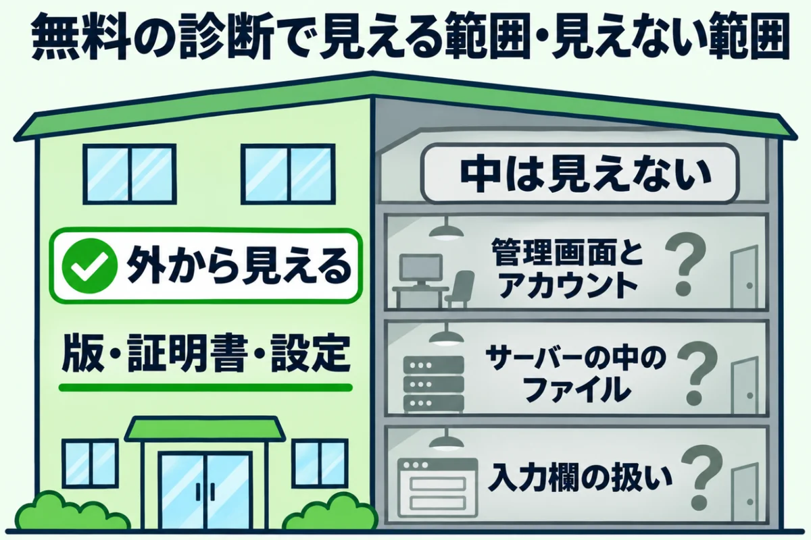
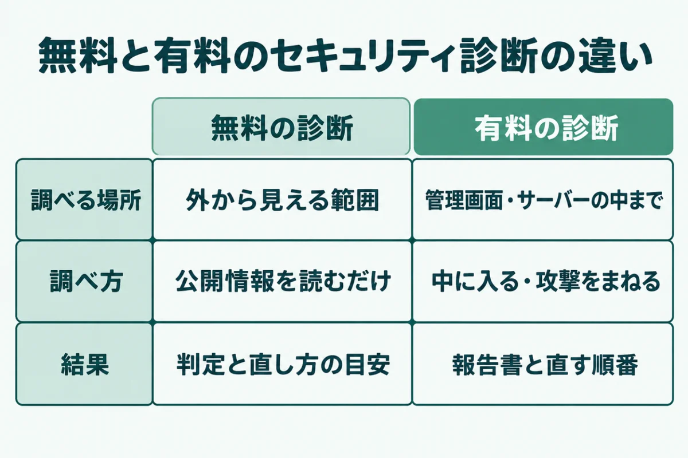
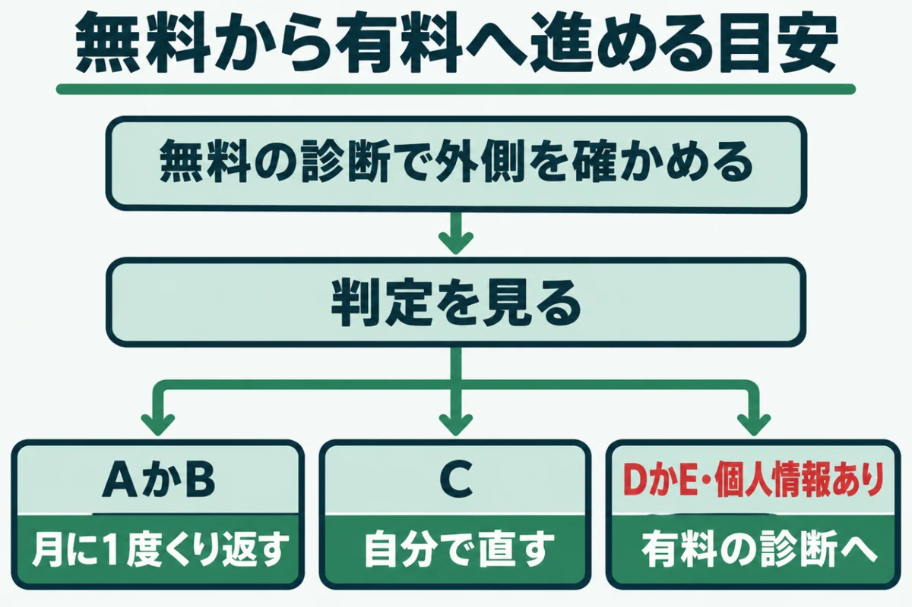

ホームページのセキュリティ診断とは？無料と有料の違いと選び方

「ホームページのセキュリティ診断を受けたほうがいいと言われた。でも、無料のものと有料のもので何が違うのだろう」と迷っていませんか？
無料の診断は手軽ですが、見ている範囲はかなり限られます。有料の診断は中まで確かめる分、費用と準備が必要です。
この記事では、無料と有料の診断で分かることの違いを整理します。どこまで無料で済ませ、どこから有料に進むかの目安もまとめました。
内容は、IPA（情報処理推進機構）と経済産業省の資料を2026年11月14日に確かめたものです。運営者が自社サイトを点検して分かったことも入れています。
ホームページのセキュリティ診断とは？無料で受けられるものもある

ホームページのセキュリティ診断は、サイトに攻撃の入り口が残っていないかを調べる点検です。攻撃する側より先に弱点を見つけることが目的になります。
診断には、外から見える情報を読むだけのものから、実際に攻撃をまねて調べるものまであるのです。無料で受けられるものもあれば、専門の会社に頼む有料のものもあります。まず、種類を3つに分けて確かめてください。
外から読むだけの診断
いちばん手軽なのは、URLを入れるだけで結果が出る診断です。ページや公開ファイルを、ふつうの閲覧と同じように読んで判定します。
見ているのは、証明書の期限やプログラムの版、設定の有無などです。攻撃する側が最初に集める情報と、ほぼ同じ範囲になります。書き込みやログインの試行はしないので、サイトに負担はほとんどかかりません。
持ち主でなくても実行できる手軽さが利点です。登録なしで、数十秒ほどで結果が出るものも多くあります。その分、外から見えないところは判定できません。
質問に答える診断
2つ目は、質問に答えて対策の状況を点数にする診断になります。IPAが公開する「5分でできる！情報セキュリティ自社診断」は、25項目に答えて状況をつかむ道具です。点数の低い項目が、次に手を付ける候補になります。
広島県警の案内資料にも、事業者向けのアンケート形式の簡易防犯診断が紹介されていました。主にWordPressのサイトを対象にした診断もあり、回答すると後日結果が届く仕組みです。
サイトを直接調べるのではなく、運用の仕方を振り返るための診断と考えてください。
攻撃をまねて調べる診断
3つ目は、専門の技術者や道具が、実際に攻撃をまねて弱点を探す診断です。入力欄に細工した文字を送り、おかしな反応が返らないかを確かめます。ログインの仕組みや、画面の移り方も調べる対象です。
IPAは、この種類の基本となる13項目を「ウェブ健康診断仕様」として公開しました。診断でサイトが止まったり、不要なデータが登録されたりすることもあります。同じサーバーを使うほかのサイトにまで、影響が及ぶおそれもあるのです。
そのため、実施する前に、サーバーの管理者の許可が必要になります。
無料のホームページのセキュリティ診断でわかる3つのこと

無料のホームページのセキュリティ診断でも、外から見える弱点はかなりの部分が分かります。攻撃する側も、最初は同じ外からの情報で狙うサイトを選ぶからです。
外から見える弱点は、外からの点検で先に見つけられます。このサイトの無料簡易診断が見ている8項目をもとに、分かることを3つに分けました。どれも、結果を見ればすぐに手を付けられる項目です。
① 古いまま止まったプログラム
1つ目は、WordPress本体やプラグイン、PHPの版が古いままになっていないかです。多くのサイトは、ページの中や応答の中に版の手がかりが残っています。古いままでも見た目は変わらないので、持ち主が気づきにくいところです。
無料の診断は、その版を最新版やサポート期限と照らし合わせて判定します。修正が止まった版を使っていないかが、まず分かる点です。
確かめ方は、WordPressのバージョンを確認する方法（管理画面と外からの両方）にあります。
② 証明書と守りの設定
2つ目は、通信を守る証明書と、ブラウザに渡す守りの設定です。証明書の期限が近いと、ある日突然、閲覧者の画面に警告が出ます。期限の切れた証明書は、訪れた人を不安にさせ、問い合わせを遠ざけてしまうのです。
守りの設定とは、ページの読み込み方を制限するセキュリティヘッダーを指します。なりすましメールを防ぐSPFやDMARCも、ドメインの公開情報から読み取れるものです。
どれも外から確かめられて、直す手間も小さい項目なので、早めに直しておきましょう。
③ 外に見えてはいけないもの
3つ目は、本来は見せる必要のない情報が外に出ていないかです。たとえば、管理画面に入るときのログイン名が、投稿者のページから読めることがあります。
インストール時の説明ファイルや、画像を置く場所のファイル一覧が見えるサイトも少なくありません。運営者の自社サイトでは、ログイン名を隠し、説明ファイルを消して判定がDからAに上がりました。
隠すだけで攻撃の手がかりを減らせる項目です。設定を少し変えるだけで済むものが多いのも、この項目の特徴になります。
無料のホームページのセキュリティ診断ではわからないこと

無料の診断で問題が見つからなくても、サイトが安全だと決まるわけではありません。外からの点検は、建物を外から見て回るようなものだからです。壁や窓の傷は見つけられても、部屋の中の様子までは分かりません。
中の部屋や配線までは見えないことを、先に知っておいてください。分からない部分を、3つに分けて説明します。どれも、外からの点検だけでは気づけないものです。
管理画面とサーバーの中
管理画面の中の設定や、ユーザーの権限は、外からは見えません。運営者の自社サイトを中から点検したとき、心当たりのない編集者のアカウントが2つ見つかりました。
サーバーには、過去の復元作業の残りのファイルも置かれたままでした。どちらも、外からの診断では判定のしようがなかったものです。
使っていないアカウントや残ったファイルは、中を見て初めて分かります。中を確かめるには、ログインできる人の協力が欠かせません。
作り込んだ仕組みの弱点
お問い合わせフォームや会員ページなど、独自に作った仕組みの弱点も対象外です。入力した文字の扱いに問題があると、情報が抜き取られるおそれがあります。
こうした弱点は、実際に細工した文字を送らないと確かめられません。読むだけの診断では、入力欄の中身までは試せないのです。
フォームのある会社のサイトほど、この差は大きくなります。WordPressでも、フォームや予約の機能はプラグインで足していることが多いのです。その部分の点検は、有料の診断に任せることになります。
「問題なし」は安全の証明ではない
IPAは、ウェブ健康診断について、安全宣言にはつながらないと説明しています。検査のパターンを絞り込み、ページも抜き取りで調べる仕組みだからです。
有料の診断であっても、見つからない弱点は残ります。結果は、その日の、その範囲での状態と受け止めてください。
プラグインには、新しい弱点が後から見つかることも珍しくありません。対処の流れは、WordPressのプラグインに脆弱性が見つかったときの対処法で確かめられます。
有料のホームページのセキュリティ診断と無料の違い

有料のホームページのセキュリティ診断は、無料の診断で見えない部分まで確かめます。違いは、調べる場所、調べ方、結果の受け取り方の3点です。無料の診断が外からの健康チェックなら、有料の診断は中まで調べる精密検査にあたります。
費用の差は、手間と責任の差と考えると、選びやすいはずです。それぞれの違いを、順に確かめてください。どれも、無料の診断では手が届かないところです。
中に入って確かめる
有料の診断では、管理画面やサーバーに入って設定を確かめます。そのため、ログイン情報を預けるか、画面を共有しながら進める形です。
このサイトの詳細診断も、管理画面のユーザーと権限、プラグインの一覧、サーバーのPHP設定まで見ます。公開フォルダに残った不要なファイルや、ファイルの権限も確かめる対象です。
持ち主の協力がないとできない点検だという点が、無料との大きな違いになります。預けたログイン情報は、診断が終わったら変更しておくと安心です。
攻撃をまねて弱点を探す
Webアプリの弱点まで調べたいときは、攻撃をまねる脆弱性診断を頼むことになります。技術者が道具と手作業を組み合わせ、入力欄やログインの仕組みを試していく方法です。結果には、見つかった弱点の名前と、危なさの度合いが並びます。
経済産業省は、こうした診断を「脆弱性診断サービス」として基準の対象にしました。サイトの規模や画面の数で、費用と期間が大きく変わる点にも注意が必要です。見積もりの段階で、どの画面を調べるのかを確かめておきましょう。
報告書と直す順番が手に入る
有料の診断では、見つかった弱点を報告書にまとめ、直す順番まで示すのが基本です。無料の診断は判定が中心で、中の状態を踏まえた直す順番までは出せません。ただ、無料の結果票でも、先に直したい3つの項目までは示しています。
このサイトの詳細診断は、29,800円（税込）です。報告書に加え、30分の説明と、対策後の再診断1回が付きます。
直したあとにもう一度確かめられるかどうかも、選ぶときの目安の1つです。報告書は、制作会社に修正を頼むときの資料としても使えます。
ホームページのセキュリティ診断を無料から有料へ進める目安

ホームページのセキュリティ診断は、最初から有料を頼む必要はありません。まず無料の診断で、外から見える弱点を確かめます。外側の弱点をつぶしてから中を調べれば、有料の診断で指摘される項目も減らせるのです。
結果を見てから有料に進むか決めるのが、無駄の少ない順番になります。判断の目安を、3つの場面に分けました。自分のサイトがどれに近いかを考えながら読んでください。
無料の診断だけで足りる場合
会社案内だけのサイトで、判定がすべてAかBなら、まずは無料の診断で足ります。WordPressとプラグインの更新を、自分で続けられることが前提です。
その場合でも、月に1度は同じ診断をくり返すことを勧めます。新しい弱点は、何もしていないサイトにも後から見つかるからです。
判定が下がったら、その時点で直すか、次の段階に進むかを決めてください。同じ診断を続けると、前回との違いも見比べやすくなります。記録として、結果票を保存しておくとよいでしょう。
有料の診断に進んだほうがいい場合
判定にDやEがあり、自分では直し方が分からないなら、有料の診断に進む時期です。個人情報を受け取るフォームや、ネットで販売するサイトも同じ考え方になります。
改ざんの兆しがあるときは、診断より先に復旧の手配を急いでください。兆しの見分け方は、ホームページが改ざんされたかも？確認したい7つのサインと自分でできる確かめ方で確かめられます。
情報を預かるサイトほど、中まで確かめる価値は高いと考えてください。迷ったら、まず結果の説明だけを受けてみる方法もあります。
頼む先を選ぶときの確かめどころ
有料の診断を頼む先は、まず診断の範囲と方法を書面で示してくれるかで選びます。IPAは、経済産業省の基準に合うと審査された診断サービスの一覧を公開中です。
専門の知識がなくても、品質を備えたサービスを選べるようにする仕組みになります。一覧に載っているかは、比べるときの手がかりの1つです。
他人のサイトに、許可なく攻撃をまねる診断をしてはいけません。頼む側も、サーバー会社の決まりを先に確かめておくと安心です。見積もりの前に、調べない範囲も聞いておくと食い違いを防げます。
URLを入れるだけで、SSL証明書やPHPの版など8項目を無料で判定します。登録はいりません。
無料で診断するホームページのセキュリティ診断の無料と有料に関するよくある質問
無料のセキュリティ診断にURLを入れても、サイトに悪い影響はありませんか？
外から読むだけの診断なら、ふつうの閲覧と同じアクセスを数回するだけです。書き込みやログインの試行はしないので、表示が遅くなったり止まったりすることはまずありません。
このサイトの無料簡易診断も、ページと公開ファイルを読みに行くだけの仕組みです。一方、攻撃をまねる診断はサイトに負荷がかかることがあります。そのため、サーバーの管理者の許可を取ってから行うのが決まりです。
他人のサイトを無料のセキュリティ診断にかけてもいいですか？
外から読むだけの判定は、誰でも見られる公開の情報を確かめるものです。ただし、詳しい結果は攻撃の手がかりにもなります。
このサイトでは、持ち主だと確かめられた場合にだけ、詳しい結果票をお送りする仕組みにしました。攻撃をまねる診断を他人のサイトに行うことは、許可がない限りやめてください。気になるサイトがあるなら、持ち主に知らせるのが近道です。
有料のセキュリティ診断の費用は、どのくらいかかりますか？
費用は、診断の方法と、調べる画面の数で大きく変わります。このサイトの詳細診断は、1サイト1回29,800円（税込）です。
攻撃をまねて画面ごとに調べる診断は、範囲を決めてから見積もりを取る流れになります。見積もりでは、対象の画面数、手作業で調べる範囲、再診断の有無を確かめてください。安さだけで選ぶと、知りたかった部分が範囲から外れていることがあります。
無料の診断で「良好」と出たら、有料の診断は受けなくてもいいですか？
会社案内だけのサイトで、更新を自分で続けられるなら、無料の診断をくり返す形でも構いません。ただ、良好という結果は、外から見える範囲に問題がなかったという意味です。
管理画面に使っていないアカウントが残っていても、外からは分かりません。個人情報を受け取るフォームがあるなら、一度は中まで確かめておくと安心です。
セキュリティ診断は、どのくらいの間隔で受ければいいですか？
外から読むだけの診断なら、月に1度くらいの間隔で確かめると変化に気づけます。プラグインの弱点は次々に公開されるので、間が空くほど見落としが増えるからです。
中まで確かめる有料の診断は、サイトを作り替えたときや、大きな更新のあとに受けてください。自分で続けるのが難しければ、定期的な点検を任せる方法もあります。
まとめ
ホームページのセキュリティ診断は、無料と有料で見ている場所が違います。無料の診断は、外から見える古い版や設定の抜け、見えてはいけない情報を手軽に確かめる道具です。
有料の診断は、管理画面やサーバーの中、入力欄の扱いまで調べてくれます。まず無料の診断で外から見える弱点をつぶすことから始めてください。
判定にDやEがあるときや、個人情報を預かるサイトなら、有料の診断に進むことを考えましょう。
まずは、今の状態を知るところから。
URLを入れるだけで、数十秒で判定が出ます。登録はいりません。